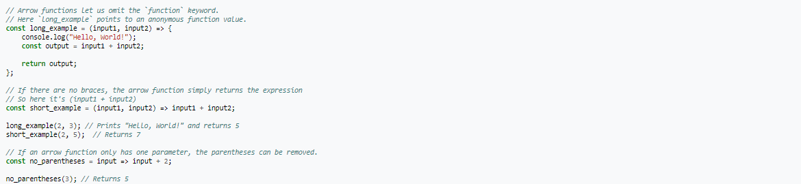

Javascript page
Links:
History Javascript
The Mosaic web browser was released in 1993. As the first browser with a graphical user interface accessible to non-technical people, it played a prominent role in the rapid growth of the nascent World Wide Web.[13] The lead developers of Mosaic then founded the Netscape corporation, which released a more polished browser, Netscape Navigator, in 1994. Navigator quickly became the most used browser.[14]
During these formative years of the Web, web pages could only be static, lacking the capability for dynamic behavior after the page was loaded in the browser. There was a desire in the burgeoning web development scene to remove this limitation, so in 1995, Netscape decided to add a scripting language to Navigator. They pursued two routes to achieve this: collaborating with Sun Microsystems to embed the Java programming language, while also hiring Brendan Eich to embed the Scheme language.[5]
Netscape management soon decided that the best option was for Eich to devise a new language, with syntax similar to Java and less like Scheme or other extant scripting languages.[4][5] Although the new language and its interpreter implementation were called LiveScript when first shipped as part of a Navigator beta in September 1995, the name was changed to JavaScript for the official release in December.[5][1][15]
The choice of the JavaScript name has caused confusion, implying that it is directly related to Java. Since Java was the hot new programming language at the time, this has been characterized as a marketing ploy by Netscape to give its own new language cachet.[16]
Adoption by Microsoft
Microsoft debuted Internet Explorer in 1995, leading to a browser war with Netscape. On the JavaScript front, Microsoft reverse-engineered the Navigator interpreter to create its own, called JScript.
JScript was first released in 1996, alongside initial support for CSS and extensions to HTML. Each of these implementations was noticeably different from their counterparts in Navigator.[17][18] These differences made it difficult for developers to make their websites work well in both browsers, leading to widespread use of "best viewed in Netscape" and "best viewed in Internet Explorer" logos for several years.[17][19]
The rise of JScript
In November 1996, Netscape submitted JavaScript to Ecma International, as the starting point for a standard specification that all browser vendors could conform to. This led to the official release of the first ECMAScript language specification in June 1997.
The standards process continued for a few years, with the release of ECMAScript 2 in June 1998 and ECMAScript 3 in December 1999. Work on ECMAScript 4 began in 2000.
Meanwhile, Microsoft gained an increasingly dominant position in the browser market. By the early 2000s, Internet Explorer's market share reached 95%.[20] This meant that JScript became the de facto standard for client-side scripting on the Web.
Microsoft initially participated in the standards process and implemented some proposals in its JScript language, but eventually it stopped collaborating on Ecma work. Thus ECMAScript 4 was mothballed.
Exapmle
Hello world

Reference
https://en.wikipedia.org/wiki/JavaScript